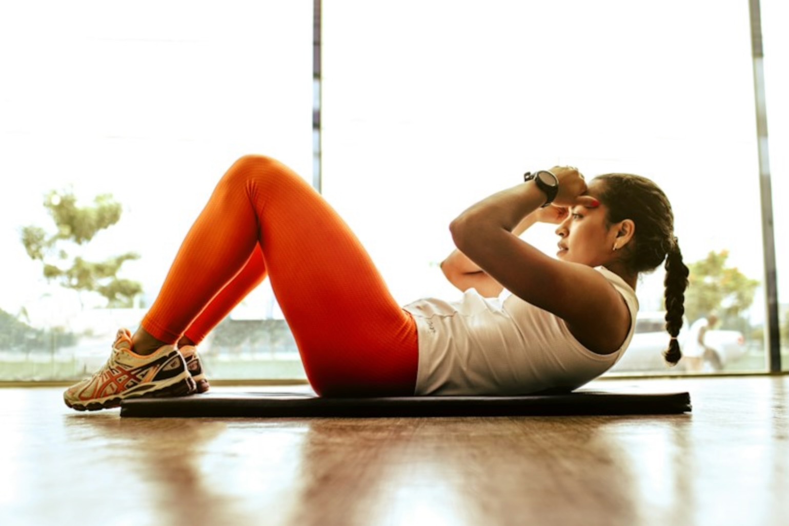
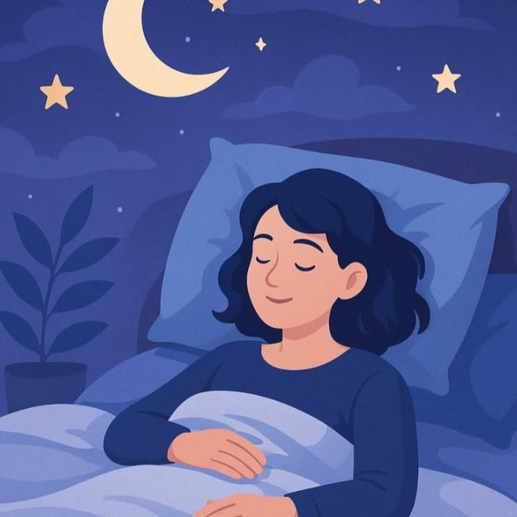
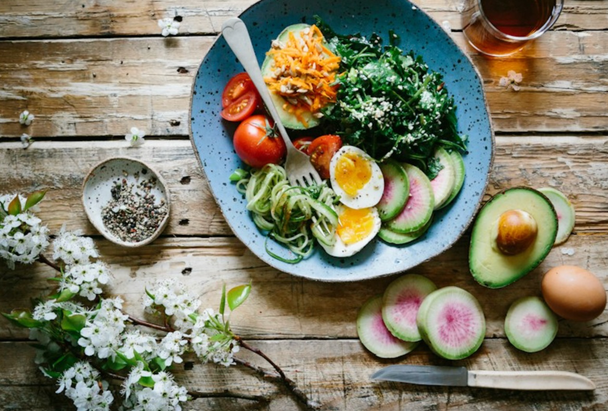
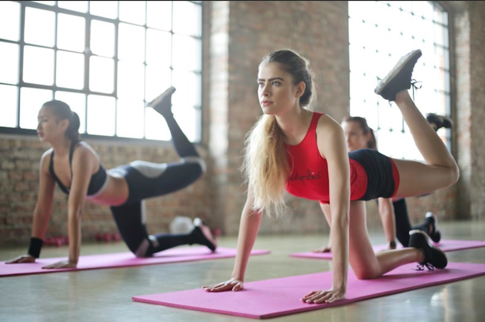

Простые привычки для здоровья, энергии и хорошего настроения
Что такое ЗОЖ?
Здоровый образ жизни — это не запреты и не скучные правила.
Это несколько простых привычек, которые помогают хорошо
учиться, меньше уставать и чаще быть в хорошем настроении.
Главное — не пытаться изменить всё сразу, а начинать
с маленьких шагов.
ЗОЖ держится на трёх основах: сон,
питание и движение. Если хотя бы
немного улучшить каждую из них, самочувствие
заметно изменится уже через пару недель.

Здоровый сон
Сон — это время, когда мозг отдыхает и запоминает
то, что ты выучил за день. Школьникам нужно спать
8–10 часов. Если спать меньше, становится
труднее сосредоточиться, портится настроение
и появляется усталость.
Советы для хорошего сна:
Ложиться спать и вставать в одно и то же время — даже в выходные.
За час до сна убирать телефон и планшет: экран мешает заснуть.
Проветривать комнату перед сном.
Не есть плотно за 2–3 часа до сна.
Придумать спокойный ритуал: почитать книгу, умыться, пожелать всем спокойной ночи.
Правило вечера:«Телефон — на зарядку, а не в кровать».

Правильное питание
Еда — это «топливо» для организма. Чтобы хватало
сил на уроки, тренировки и игры, питаться нужно
регулярно и разнообразно.
Основные правила:
Завтракать обязательно — утренняя еда даёт энергию на весь день.
Есть 3–5 раз в день небольшими порциями.
В каждом приёме пищи — овощи или фрукты.
Пить воду в течение дня, а не только газировку и соки.
Ограничивать чипсы, фастфуд и сладкие напитки.
Не переедать перед уроками физкультуры и перед сном.
Пример полезного перекуса:яблоко + горсть орехов + стакан воды.

Комплексы упражнений для школьников
Школьнику нужно двигаться не меньше 60 минут в день.
Это не обязательно спортзал — подойдут зарядка,
прогулка, игры во дворе и танцы.
Комплекс 1. Утренняя зарядка (5–7 минут)
Потягивания — 5 раз.
Наклоны головы вправо-влево — по 5 раз.
Вращения плечами — по 5 раз в каждую сторону.
Наклоны корпуса вперёд-назад — 8 раз.
Приседания — 10–15 раз.
Прыжки на месте — 20 раз.
Ходьба на месте с глубоким дыханием — 1 минута.
Комплекс 2. Перемена между уроками (2–3 минуты)
Встать, потянуться вверх — 3 раза.
Наклоны в стороны — по 5 раз.
«Мельница» руками — 10 раз.
Повороты корпуса влево-вправо — по 5 раз.
Несколько глубоких вдохов и выдохов.
Комплекс 3. Зарядка для осанки (5 минут)
Стоять у стены, прижавшись затылком, лопатками и пятками — 1 минута.
«Кошка»: на четвереньках прогибать и выгибать спину — 10 раз.
Поднимать и сводить лопатки — 15 раз.
Ходить с книгой на голове — 1–2 минуты.

Топ-3 привычки для здоровья
1 место — Спать 8–10 часов
Хороший сон улучшает память, настроение и внешний вид.
2 место — Завтракать и пить воду
Заряд энергии утром и ясная голова в течение дня.
3 место — Двигаться каждый день
Зарядка, прогулка или игры на улице — не меньше часа.
14 полезных привычек школьника
Ложиться спать в одно и то же время.
Убирать телефон за час до сна.
Проветривать комнату перед сном.
Завтракать каждый день.
Пить воду в течение дня.
Есть овощи и фрукты каждый день.
Меньше чипсов и сладкой газировки.
Делать утреннюю зарядку.
Гулять на улице не меньше часа.
Делать перерывы при выполнении домашнего задания.
Держать спину ровно за столом.
Заниматься спортом или танцами 2–3 раза в неделю.
Мыть руки перед едой.
Ложиться спать без ссор и переживаний.
Главные принципы ЗОЖ
Сон важнее ночных сериалов и игр.
Еда должна быть разнообразной, а не только вкусной.
Движение — каждый день, хоть понемногу.
Вода лучше сладких напитков.
Регулярность важнее силы воли.
Маленькие шаги дают большой результат.
Здоровье — это привычка, а не разовое усилие.
Дополнительная информация
Здесь можно узнать больше о здоровом образе жизни,
питании и упражнениях.